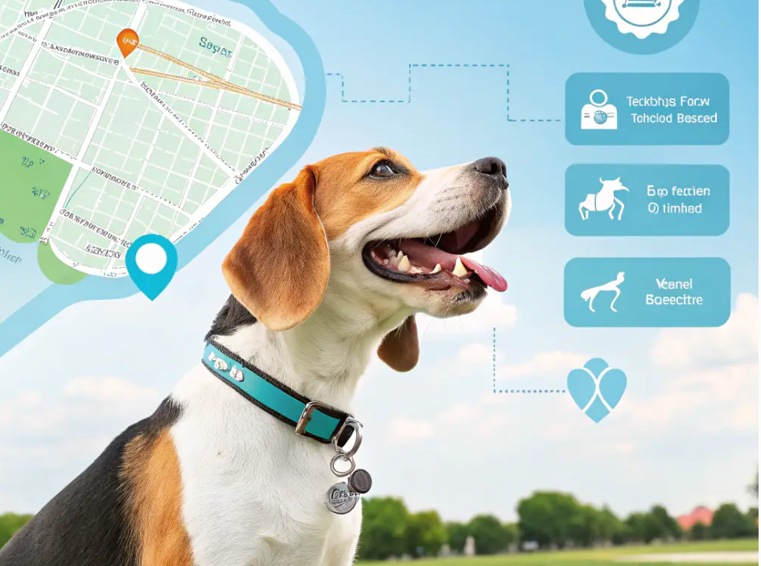

Real-Time Tracking for Stray Dog Welfare
Our real-time tracking feature provides up-to-the-minute information on the location and status of stray dogs. This allows volunteers and rescuers to respond quickly and effectively to dogs in need, ensuring they receive timely care and support. Join us in making a difference!
- Instant Location Updates: Know exactly where stray dogs are located.
- Health Status Monitoring: Access information on each dog's health.
- Efficient Rescue Operations: Coordinate rescues with real-time data.
